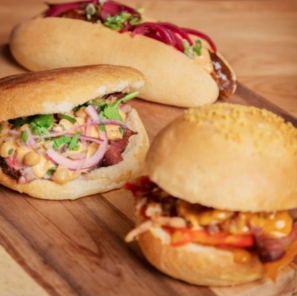
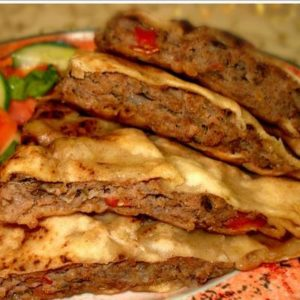
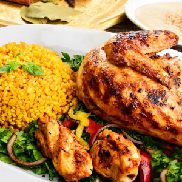
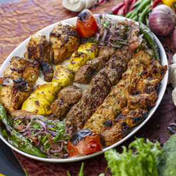
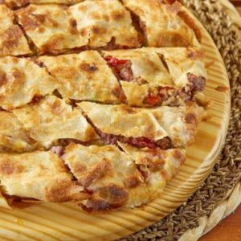

<ion-header >
  <ion-toolbar>

      <ion-title style="font-family: cairo; font-weight: bold;letter-spacing: normal; text-align: center; color:#c2212a">القائمة</ion-title>  
      <ion-item slot="end" (click)="viewOrder()">
       
        <ion-badge  style="font-family: cairo" >{{total}} ر.س</ion-badge>
        <ion-icon style="font-size: x-large;color:#c2212a" name="basket-outline">  </ion-icon>   
      </ion-item>
    </ion-toolbar>
</ion-header>

<ion-content dir="rtl">
  <!--
  

  
  -->

  <ion-row style="justify-content: center; text-align: center; padding:5%" >
    <ion-col size="2" sizeLg="1.5" sizeSm="4" sizeXl="1.5" sizeMd="1" sizeXs="6">
      
      <ion-label style="font-family:cairo; font-weight: bold;" >سندوتشات</ion-label>
    </ion-col>  
    <ion-col size="2" sizeLg="1.5" sizeSm="4" sizeXl="1.5" sizeMd="1" sizeXs="6"  >
      
      <ion-label style="font-family:cairo; font-weight: bold;" >السلطات</ion-label>
    </ion-col>  
    <ion-col size="2" sizeLg="1.5" sizeSm="4" sizeXl="1.5" sizeMd="1" sizeXs="6"  >
      
      <ion-label style="font-family:cairo; font-weight: bold;" style="border-radius: 75%;" >حواوشي </ion-label>

    </ion-col>  
    <ion-col size="2" sizeLg="1.5" sizeSm="4" sizeXl="1.5" sizeMd="1" sizeXs="6" >
      
      <ion-label style="font-family:cairo; font-weight: bold;" >ركن الوجبات</ion-label>
    </ion-col>  
    <ion-col size="2" sizeLg="1.5" sizeSm="4" sizeXl="1.5" sizeMd="1" sizeXs="6" >
      
      <ion-label style="font-family:cairo; font-weight: bold;" >مشويات   </ion-label>
    </ion-col>  
    <ion-col size="2" sizeLg="1.5" sizeSm="4" sizeXl="1.5" sizeMd="1" sizeXs="6" >
      
      <ion-label style="font-family:cairo; font-weight: bold;" >أطباق جانبية
      </ion-label>
    </ion-col>  
    <ion-col size="2" sizeLg="1.5" sizeSm="4" sizeXl="1.5" sizeMd="1" sizeXs="6" >
      
      <ion-label style="font-family:cairo; font-weight: bold;" >فطائر حلو
      </ion-label>
    </ion-col>  
    <ion-col size="2" sizeLg="1.5" sizeSm="4" sizeXl="1.5" sizeMd="1" sizeXs="6" >
      
      <ion-label style="font-family:cairo; font-weight: bold;" >فطائر حادق
      </ion-label>
    </ion-col>  
    <ion-col size="2" sizeLg="1.5" sizeSm="4" sizeXl="1.5" sizeMd="1" sizeXs="6" >
      
      <ion-label style="font-family:cairo; font-weight: bold;" >كراب
      </ion-label>
    </ion-col>  
    <ion-col ssize="2" sizeLg="1.5" sizeSm="4" sizeXl="1.5" sizeMd="1" sizeXs="6" >
      
      <ion-label style="font-family:cairo; font-weight: bold;" >كريب الحلو
      </ion-label>
    </ion-col>  
    <ion-col size="2" sizeLg="1.5" sizeSm="4" sizeXl="1.5" sizeMd="1" sizeXs="6" >
      
      <ion-label style="font-family:cairo; font-weight: bold;" >المشروبات</ion-label>
    </ion-col>  
 


  </ion-row>


</ion-content>